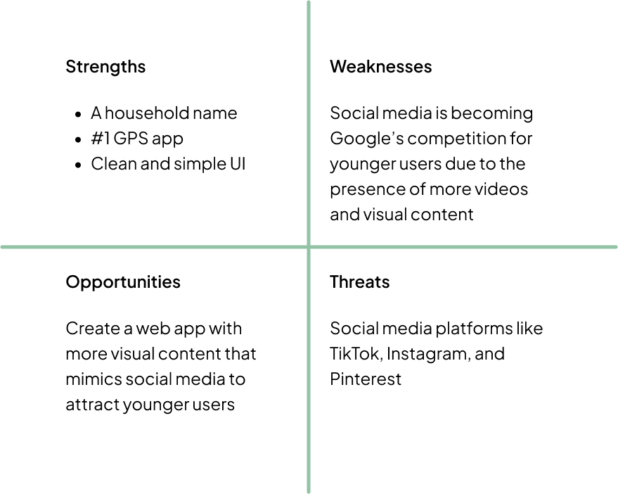
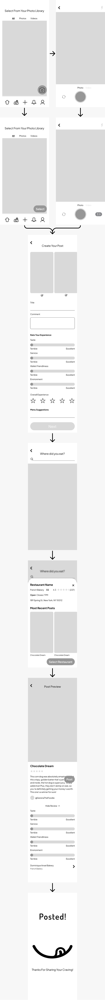
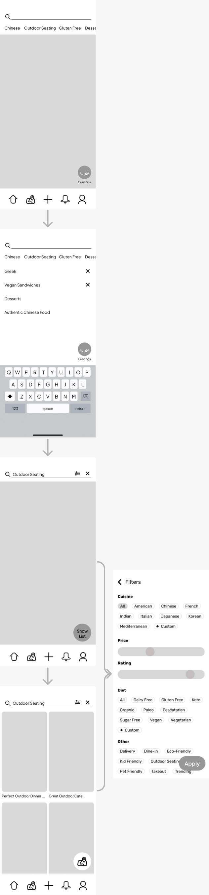

Project Overview
Whether you are exploring new places or simply scouting local spots, discovering delectable new foods you end up craving can be an exciting experience. However, tracking down food that hits the spot can often be time-consuming and a challenge. Crave is a user-friendly web application that aims to assist younger generations in discovering new foods they’ll love, all while providing greater ease and convenience.
The Problem
Users find that searching for a new place to eat is a time-consuming and tedious process. They are dissatisfied with the information provided by current food-finding apps, as the lack of visual content makes it difficult to fully understand the dining experience. Additionally, users lack an organized way to save the restaurants they enjoy, leaving them overwhelmed when trying to find them again. Younger users, in particular, are turning to alternative sources for this information.
Competitive Analysis of Google Maps
Google Maps reigns as the most popular navigation app in the US, with many relying on it to locate dining spots wherever they please.
However, statistics indicate that Gen Z members comprise one of the least active user demographics.
Researchers have found that Gen Z often rely on social media as their primary source of information. This is largely due to the widespread use of images and videos on social platforms, which hold a strong appeal to them.
SWOT Analysis of Google Maps
User Interviews
The patterns evident from user interviews corroborate the findings of the competitive analysis.
Patterns
- Participants used social media to search for places to eat
- Being budget-friendly was a crucial factor for them
- Pictures were essential to help them better understand the dining experience
- Suggestions from friends encourage them to explore specific restaurants further
Quotes From Participants
“You can judge a lot from a picture or video”
“They’re my friends, they’re not going to lead me astray.”
Research Conclusions
Gen Z places a high value on visual content when searching for dining spots, with social media becoming their primary source of information. This shift has led to a decline in the use of traditional apps like Google Maps. Additionally, their decisions are influenced by the preferences of friends. The opportunity here is to create a web app that prioritizes rich visual content and mimics social media interfaces, making it more appealing and engaging for younger users.
User Personas
Jobs To Be Done
When looking for a new place to eat
I want to know exactly what the food will be like
So that I can determine if I would enjoy eating there
When I go out to eat with friends
I want to find a place to eat that will meet all our needs
So that we can all have a good time together
When deciding on what restaurant to go to
I want to know what my friends have enjoyed
So that I can make a better decision
When I find a restaurant I like
I want to easily find it again
So that I don’t forget it or waste time looking for it
When eating at a restaurant
I want to share my thoughts on the food and environment
So that others can better decide if they would like to eat there
What Does Crave Do?
Crave is a location-based responsive web app designed to emulate social media interfaces, making it appealing to younger generations. Users can create “craving boards” to compile their favorite posts and dining spots, allowing them to easily locate and satisfy their cravings whenever necessary. They can share posts about the restaurants they visit and browse posts from others to continually discover their newest cravings.
User Flows
As mentioned, Crave helps users completely and efficiently achieve their goals. Below are user flows that demonstrate how they can share their thoughts with friends about places they’ve eaten and how they can filter their search to find dining spots that meet all their needs.
Creating a Post
Mid-Fidelity
High-Fidelity

Filtering a Search
Mid-Fidelity
High-Fidelity
Style Guide
Crave keeps the clean and appealing look of Google Maps but adds a touch of fun and whimsy. The style features rounded and simple elements that give it a friendly feel. The design choices and language is positive and motivating, making it even more inviting.
Colors
Primary
Secondary
Buttons
Primary
Secondary
Tertiary
Other Elements
Logo
The logo can either appear as the full word or the icon depending on the screen size. Either logo can on white and colored backgrounds following the patterns shown above.
Icons
The icons must have curved edges and be outlined with a stroke width of at least 2px. Icons should have an outlined style.
Imagery
The icons must have curved edges and be outlined with a stroke width of at least 2px. Icons should have an outlined style.
Copy/Language Guidelines
The language on Crave should be friendly, motivating, and full of praise. Use warm, encouraging words to make users feel supported. Celebrate their achievements with enthusiasm. Avoid periods unless necessary, opting for exclamation points and emojis to convey excitement.
Typography
Preference Testing
To make Crave more appealing to users, a preference test was conducted to gather their opinions on the design. In the following test, users were asked, “Which image sizing is more appealing to you? Why?”
The results reveal that most users prefer design option 2 due to its greater diversity and the enhanced insight it provides into what the app has to offer. This feedback has been incorporated into the design.
Responsive Design
Crave can be accessed on a variety of devices, always delivering an enjoyable experience. The screens adapt seamlessly as the device size changes, ensuring a smooth user experience whether the screen gets larger or smaller.
Retrospective
In my project, focusing on Jobs to Be Done (JTBDs) helped me design with clear user goals, while conducting competitive analysis allowed me to pinpoint essential features missing from competitors. User-centered design, lean UX, and design thinking processes guided my approach, especially in areas like user research, creating personas, and testing rapid prototypes, which provided valuable insights. However, I noticed I spent too much time on user flow details and individual screes, that I began to loose focus on what the user’s overall goal and journey was. Going forward, I aim to improve by concentrating on the entire user experience, defining clearer flow endpoints, and regularly revisiting research to stay aligned with user goals.
What's Next?
The next step for Crave is to carry out user testing to identify enhancements for the user experience. Additionally, we will iterate on the platform to incorporate a reward system, allowing users to accumulate points and earn exclusive deals for their favorite cravings.